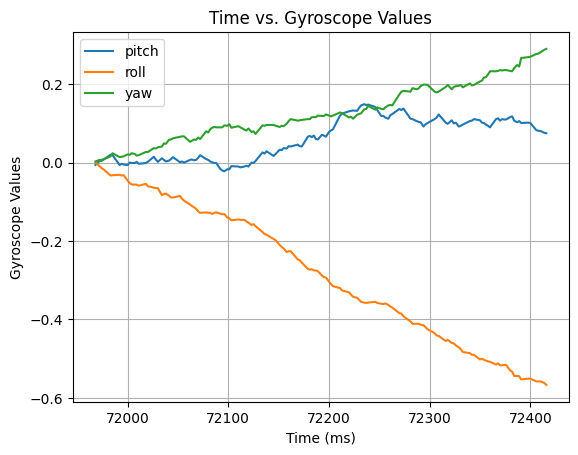

ECE 5160 Fast Robots
Hello! My name is Katherine Hsu, and I'm a Master of Engineering Computer Science student at Cornell University. My research interest includes artificial intelligence, robotics, and embedded systems!
Hello! My name is Katherine Hsu, and I'm a Master of Engineering Computer Science student at Cornell University. My research interest includes artificial intelligence, robotics, and embedded systems!
The goal of this lab is get familiar with using the ArduinoIDE, Artemis Nano board, and BLE communication!
For the prelab, I added the latest version of the Sparkfun Appollo3 boards manager to the ArduinoIDE on my laptop.

For this task, I connected the Artemis Nano board to my laptop and selected the “RedBoard Artemis Nano” board and the corresponding serial port on the ArduinoIDE to ensure proper serial connections.

For this task, I used the simple Blink example code to test the Artemis board.
For this task, I used the Example04_Serial code to test the serial communication functionality of the Artemis board. Using the serial monitor in the ArduinoIDE, I confirmed that the board can print and echo back messages.
For this task, I used the Example2_analogRead code to check if the temperature sensor is functioning properly. One challenge that I ran into while doing this task was that my hands were too cold to drastically change the chip’s temperature. As shown in the video, the temperature changed from around 32288 to 32908.
For this task, I used the Example1_MicrophoneOutput code to check if the microphone is functioning properly. In the video, I played the A4 note on my phone to check if the highest frequency on the serial monitor would change.

Using the example code from Task 5 as a template, I was able to program the Artemis board to react to the C note by blinking the on-board LED. Additionally, I checked the frequency of the C5 note using the Example1_MicrophoneOutput code, which showed a frequency of 526 Hz.
Note: I used the Tuner Lite app on my phone to play the different musical notes.
For the prelab, I set up a virtual environment called FastRobots_ble and installed the required packages in the environment using the command
pip install numpy pyyaml colorama nest_asyncio bleak jupyterlab
Note that Matplotlib was installed later in the lab!
Afterward, I added the codebase to the folder and successfully started the Jupyter server.

Lastly, I installed the ArduinoBLE library in the ArduinoIDE and flashed the ble_arduino.ino code from the codebase to the Artemis Nano board, which allowed the board to print its MAC address on the serial monitor.
Using the function uuid4(), I was able to generate a unique UUID.

Then, I updated the files with the correct MAC and UUID addresses!
In connection.yaml
artemis_address: 'c0:07:80:99:a1:44'
ble_service: 'b6c05544-1f26-40f3-a096-4e730eb9f3d2'
In ble_ardruino.ino
#define BLE_UUID_TEST_SERVICE "b6c05544-1f26-40f3-a096-4e730eb9f3d2"
For this task, I programmed the ECHO function so that when the robot (Artemis board) receives a string “Hi!!!” it would return “Robot says -> Hi!!!”
For this task, I programmed the SEND_THREE_FLOATS function to return the three float values extracted from the command.

For this task, I added a command GET_TIME_MILLIS that returns the time since the program started in milliseconds using the function millis().

For this task, I programmed the notif_handler function and added the start_notify function so that the program would automatically run the notif_handler function whenever the RX_STRING characteristics is updated.

With the notification handler, the robot can send commands to the computer without the computer initiating a command first. This is useful for the tasks below since we will be continuously receiving time and temperature data from the robot.
For this task, I created a command called LOOP_TIME that collects the time data on the robot and sends them to the computer for 3 seconds. For debugging purposes, I also printed the time to the serial monitor on the robot side.
Using a spreadsheet, I was able to calculate the effective data transfer rate.
183 entries / (669857 ms - 666853 ms) = 0.0609 entries / ms = 60.9 entries / second
For this task, I created a global variable array called time_stamp_array with a size of 30 on the robot side. Then, I created a command called SEND_TIME_DATA that stores 30 time data in the array and sends the data over to the computer once the robot finishes collecting data.
Effective data transfer rate = 30 entries / (749290 ms - 749260 ms) = 1 entry / ms = 1000 entries / second
For this task, I added another global variable array called temp_readings_array with a size of 30 on the robot side. Then, I created another command called GET_TEMP_READINGS that uses a similar logic as the SEND_TIME_DATA command, except that it is storing and sending data in two arrays (time + temperature) concurrently.
In order for the notification handler to parse the strings properly. I added indicators to the beginning of the data string that is being sent over from the robot. Therefore, since Task 6 is only sending the time data, I added “1” to the beginning of the string so that the computer knows that it is only expecting one data. Similarly, I added “2” to the beginning of the data string for Task 7 since the notification handler needs to parse the time and temperature data. By using If Else statements, the notif_handler function can identify different types of strings that the robot sends.

The first method records data at a rate of 60.9 entries per second. In comparison, the second method records data at a rate of 1000 entries per second, which is significantly faster than the first method. Note that the sample size for the second method is only 30 entries in comparison to the 183 entries for the first method.
The Artemis board has 384 kB of RAM and each int has a size of 4 B.
384 kB / 4kB = 96 int data
Therefore, we can store approximately 96 int type data on the board before running out of memory. However, it is important to note that other parts of the code would also take up memory on the board. So, the actual amount of data we can store would be smaller than 96.

Since each char is 1 Byte of data, I decided to use the message “hello” to collect the data rate for responses ranging from 5 bytes to 120 bytes. In the end, I was able to collect 24 data points and use the Matplotlib library to plot a scatter plot of response size vs. data rate.
According to the plot, the data rate and response size have a positive correlation.
Therefore, the data rate of shorter responses is slower than the data rate of longer responses. This is because short packets introduce more overhead than larger packets. In conclusion, larger responses can help reduce overhead because it is effectively using the data transmission space.

To test the reliability when the robot sends data at a higher rate, I added a command called RELIABILITY that sends over 1000 messages to the computer. In order to test a fast transmission rate, I made sure that there are no unnecessary codes in between each data transmission.

Afterward, I created a function to check if the computer read all 1000 messages sent from the robot correctly.

The results show that the communication between the computer and the robot is reliable!
Through this lab, I was able to get familiar with using the Artemis Nano board to communicate with the computer via BLE!
Thank you to Professor Helbling and the TAs for their help during lab sessions. Furthermore, I referenced Nila Narayan and Mikayla Lahr’s websites!
The goal of this lab is get familiar with using the IMU and understand how accelerometers and gyroscopes work!
For the prelab, I read the documentations for the IMU to better understand how to use it for the lab.
Here is a diagram showing the pitch, roll, and yaw directions. We will be using these terms throughout this lab!
This is the set up that I will be using for this lab.
Using the example code Example1_Basics, I was able to test if the IMU is functioning correctly.

As seen in the image, when the IMU is flat on the table and not moving, most of the values except for Acc_Z are close to zero. This is because even though the IMU is not moving, there is still gravitational acceleration due to gravity. Additionally, all the gyroscope values are near zero because the IMU is not rotating. After playing around with the IMU for a while, I confirmed that the accelerometer and gyroscope values change accordingly.
The AD0_val that I will be using is 1. According to the datasheet and hookup guide on the Sparkfun website, AD0 represents the LSB of the I2C Slave Address. Since the ADR jumper is not closed, I decide to keep the AD0_val at 1.
I also added a visual indication where the on board LED will blink three times on start-up to show that the board is running.
Using the equations that we learned during lecture and also the example code provided by the professor, I was able to compute the pitch and roll values from the accelerometer.

Using the wall on the side of my desk, I was able to show the pitch and roll values when the IMU is at {-90, 0, 90}. As expected, the pitch value is around -90, while the roll value is around 90. Therefore, the accelerometer is outputting relatively accurate values.
In order to analyze the noise on the frequency spectrum, I plotted fourier transform graphs for both the pitch and roll values. To get a more accurate reading, I set the size of the array to 150.
This is the pitch graph BEFORE using fourier transform.
This is the pitch graph AFTER using fourier transform.
This is the roll graph BEFORE using fourier transform.
This is the roll graph AFTER using fourier transform.
Looking to the fourier transform graphs that I plotted, I decided to use 3 HZ as my low pass filter cutoff frequency.
In order to calculate the alpha value for the low pass filter, I wrote a few lines of code on jupyter notebook to compute the value using the cutoff frequency I picked.
As shown in the code snippet, the calculated alpha value is around 0.05.
Using the alpha value, I was able to compute and graph the filtered pitch and roll values.
Comparing the filtered and unfiltered trends, we can see that the filtered graphs have less noise.
Here are the equations that I used for calculating the pitch, roll, and yaw values from the gyroscope data.
Here is a graph of the gyroscope pitch, roll, and yaw values when the IMU is flat on the table. As seen in the graph, the values stayed around zero in the beginning, but then started drifting away from zero.
Here is a video showing the gyroscope values changing with different rotations!
Using the equations that we learned in lecture, I was able to calculate the complementary filtered pitch and roll values!
Here are the comparisons of the low pass filtered and complementary filtered pitch and roll values.
The graphs show that the complementary filtered values follow the trend of the low pass filtered ones.
In order to ensure a fast sampling rate, I removed all print statements and used the array method that we learned about in the previous lab to store the sampling data. I also created “START” and “STOP” commands to set the start and stop flags on the robot side.
Initially, I wanted to use to use 2 string arrays, one for accelerometer values and one for gyroscope values so it would take up less memory. However, I realized that the size of the string would be significantly larger than a float value. Therefore, I decided to use 5 separate arrays for storing the data (pitch_a, roll_a, pitch_g, roll_g, yaw_g, time) for simpler processing and an efficient use of memory. Additionally, I decided to use the floats data type to store the data because the accelerometer and gyroscope both output float values for better precision.
In terms of the array sizes, I initially set the array sizes to around 3000 each. After testing, I noticed that the sampling rate is around 358 data per second. The array sizes after recording 5 seconds of data were 1790. Therefore, I modified the code on the robot side to have around a size of 2000 for each array. While I was uploading the code, the Arduino IDE outputted that the global variables are using up 31% dynamic memory.
Here is a graph showing the time stamps and the collected data. The robot started recording data at around 46100 ms and stopped recording around 51178 ms.
After playing with the RC car for a while, I noticed that when it approaches a wall at a fast speed, it would either flip over or bounce off the wall depending on the approach angle. Furthermore, if I hold down the left/right control, the car would spin in place.
When I was programming the fourier transform code using the reference website, I noticed that the line “from scipy import pi” was giving me an import error. Therefore, I removed the import code since the numpy library also has a pi function.
IMU: https://www.sparkfun.com/sparkfun-9dof-imu-breakout-icm-20948-qwiic.html
Fourier Transform: https://www.alphabold.com/fourier-transform-in-python-vibration-analysis/
Thank you to Professor Helbling and the TAs for their help during lab sessions. Furthermore, I referenced Nila Narayan and Daria Kot’s websites!
The goal of this lab is get familiar with using the ToF distance sensors!
According to the datasheet, the Time-of-Flight sensors should have an address of 0x56.
By using two ToF sensors, the robot can get distance readings from different perspectives. Since the two ToF sensors have the same default I2C address, we need to change the address for one of them in order to read data from both sensors simultaneously. I decided to use the approach that changes the address programmatically using the XSHUT pin on the ToF sensor. By wiring the XSHUT pin to a GPIO pin on the Artemis, we can turn off one of the sensors to change the address of the other.
I decided to put one in the front, and the other on the robot’s right side. This will help the robot detect obstacles/walls that are on its right side or in front of it, which will be useful for performing stunts. Due to only having 2 sensors, the robot won’t be able to detect obstacles that are on the left side or behind it.
In order to power up the Artemis with a battery, I cut one of the 650 mAh battery and connected the wires to the JST jumper wires with solder and heat shrinks. To avoid shorting the battery, it is important to cut the wires one at a time.
Here is a video demonstrating that the battery is working properly. When the Artemis is powered by the battery, it can still communicate with the computer via Bluetooth.
Here is an image showing the connections of the sensors and the Artemis board. I decided to use the longer QWIIC cables for the ToF sensors so I could place them at the corresponding edges of the car.

According to the QWIIC connector guide, the blue wire corresponds to the SDA signal and the yellow wire corresponds to the SCL signal. In addition, I soldered a wire between the XSHUT pin of the right ToF sensor and the GPIO 7 pin on the Artemis board. This will be used for changing the I2C address later in this lab.
Using the example code Example1_wire_I2C, the Artemis was able to scan for the I2C address of the ToF sensors. As shown in the image below, the program prints out 0x29 for the address.
As shown in this table below from the datasheet, the LSB of the I2C address is the R/W bit. Looking at the address without the R/W bit, it shows “0101 001”, which is equal to 0x29. Therefore, the output matches with the expected I2C address value.
There are 3 ToF sensor modes - short, medium and long. The maximum ranging distance is around 1.3 m for short mode, 3 m for medium mode, and 4 m for long mode. While the short mode has a smaller maximum ranging distance, it is the most insensitive to ambient light and has a maximum sampling rate of 50 Hz. The medium and long modes both have a maximum sampling rate of 30 Hz. Since the robot will be performing stunts and it will be difficult to find consistent lighting conditions, I decided to use the short sensor mode for my robot.
The minimum ranging distance of the sensors is 40 mm, which explains why the sensors aren’t recording data accurately for distances less than that. Since I’m using the short mode, the sensor range should be 40 mm - 1300 mm.

As shown in the plot, the short and long mode measurements are similar, but the short mode has better accuracy.
Since I’m using the short mode, the minimum timing budget should be 20 ms. I decided to test out four ranging times - 20 ms, 100 ms, 200 ms, and 300 ms - by taping the sensor to my laptop and take 100 measurements of the wall distance for each ranging time.
Looking at the graph, we can see that the data for 20 ms has the worst repeatability and accuracy and the data for 200 ms has the best. Therefore, I decided to use 200 ms for the sensors.
Below is the code that I used for changing the I2C address and the serial output confirming that the two sensors have different addresses. Using the XSHUT method mentioned in the prelab, I changed the I2C address of the front ToF sensor to 0x39. Note that the output address value is in decimal format.
The front ToF sensor now has an address of 0x39 (57 in decimal), while the right ToF sensor’s address is 0x52 (82 in decimal).
Here is a video demonstrating that the two sensors are working in parallel and correctly.
To test the sensor speed, I programmed the Artemis to print out the time as fast as possible, while using the checkForDataReady() function to print out the sensor data only when it’s available.

As shown in the image, the loop is executing at around
36 / (60188 - 59967) = 0.163 loops / ms = 163 loops / second
The sensor is collecting data at a rate of
4 / (60188 - 59994) = 0.021 data / ms = 21 data / second
In comparison, the loop is executing at a rate a lot faster than the sensor is collecting data. The current limiting factor of the ToF sensors is due to the program needing to wait for the data of both sensors to become available before it can print out the distance data.
I modified the code from the previous lab where I recorded the IMU data over 5 seconds and sent it via Bluetooth to include the data for the two ToF sensors. Using the code, I was able to record the IMU data and ToF data simultaneously and plot them using Matplotlib. In addition, the IMU data that I used is the complementary filtered data since I will be using this data in future labs.
As shown in the graphs, the IMU and ToF both outputted fairly consistent values throughout the 5 second period. There is a slight drift for the yaw value since it isn’t filtered.
Here are some of the pros and cons of different common IR sensors.
The one we are using for the robot is the ToF IR sensor, which measures the distance by emitting a pulse-modulated signal and recording the time it takes for the signal to return. It uses the equation distance = time * speed_of_light / 2.
To compare the sensitivity of the sensors to different colors and textures, I used a few objects that are in my room - light blue flash card, dark blue flash card, white cardboard box, white glossy folder, pink plastic correction tape.
As shown in the plot, the measurements of different materials are similar because the ToF sensor is insensitive to colors and textures. Since I’m using short mode, the sensors should be insensitive to ambient lighting as well. Note that the data can vary due to the lighting in my room and human error (I was holding the sensor and objects with my hand).
QWIIC: https://www.sparkfun.com/sparkfun-qwiic-multiport.html
ToF: https://cdn.sparkfun.com/assets/8/9/9/a/6/VL53L0X_DS.pdf
Thank you to Professor Helbling and the TAs for their help during lab sessions. Furthermore, I referenced Wenyi Fu and Daria Kot’s websites!
The goal of this lab is to practice soldering and understand how to use the motor drivers!
To make the wiring to the motors easier, I decided to have the motor drivers on separate sides of the Artemis board. After confirming which GPIO pins have PWM functionality, I wired the left motor driver to pins A2 and 4, and the right motor driver to pins A15 and 13. I also decided to keep some space between the pins to prevent shorting the board by accident.
We’re using the 650 mAh battery for the Artemis, and the 850 mAh battery for the motor drivers/motors. This is because the motors draw a lot of current and we want to prevent the motors from interfering with the Artemis board with electric noise.
The DC motor controllers that we’re using have a Vin range of 2.7 V to 10.8 V. I decided to use 3.7 V for the voltage supply because the battery that we will be using is a 3.7 V 850 mAh lipo battery.
Note:
Later in this lab, I ran into a problem where the motor drivers were outputting the correct PWM signals on the oscilloscope, but after wiring them to the motors, the wheels wouldn’t spin. In addition, the power supply’s voltage would drop from 3.7 V to 2.5 V when using it to power the motor drivers. After debugging with the TA, we realized that the power supply had a very low current limit (around 0.002 A) set. Once we increased the current limit to around 1.5 A, it solved the problem!
Here is the current limit that I ended up using.

Here is the power supply setup when powering the motor drivers and motors. As shown in the the image, the current is around 0.5 A, which is a lot higher than the 0.002 A current limit set initially.
To confirm that the motor drivers can successfully output PWM signals, I wrote the code snippet below to test the motor drivers with the oscilloscope and power supply. I hooked up the oscilloscope probe to the LEFT_IN1 (Blue Trend) and the RIGHT_IN1 (Yellow Trend) wires to test both drivers at the same time.
As shown in the waveform below, the two motor drivers were able to generate PWM signals simultaneously.

Here is a video showing my testing setup with the power supply and oscilloscope, including the output waveforms!
For this section, I soldered the motor drivers’ AOUT and BOUT wires to the motors on the car. Using the power supply, I tested if the motor drivers could successfully control the wheels on each side of the car. The power supply setup is the one mentioned in Task 1.
Here is a video of the wheels on the left side of the car spinning, powered by the power supply.
Here is a video of the wheels on the right side of the car spinning, powered by the power supply.
After confirming that the motor drivers can control the motors in the previous task, I soldered the Vin and GND wires on the motor drivers to the battery connector on the car. Using the 850 mAh battery, I tested if the wheels can spin successfully while being powered by the battery.
Here is a video of the wheels on the left side of the car spinning, powered by the 850 mAh battery.
Here is a video of the wheels on the right side of the car spinning, powered by the 850 mAh battery.
Here is a picture of my assembled car with labels.
To test the lowest PWM value that can allow the wheels to overcome friction going forward, I repeatedly tested the straight() function with different values. I started from a value of 70 down to 35, decreasing by 5 every time. At the end, I noticed that the lower limit PWM for going straight is around 40 for my car. At 35, the car could barely move.
Here is a video of the lowest PWM value for going straight.
Similar to above, to test the lowest PWM value that can allow the wheels to overcome friction while turning, I repeatedly tested the turn() function with different values. I started from a value of 40 up to 115, increasing by 5 every time.
As shown in the video below, at around 100, the car was turning slightly, but it wasn’t able to do a full spin.
At the end, I noticed that the lower limit PWM for turning is around 115 for my car. Here is a video of the lowest PWM value for overcoming friction for turning.
Note that while testing I changed my battery a few times to ensure that the battery I’m using is fully charged.
While testing for the lowest PWM value in the previous task, I noticed that the car would drift towards the left slightly when going in a straight line. Therefore, I added a calibration factor to my code. After a few tests, I decided that a factor of 1.3 would be the most suitable for my car.
Here is a video showing the car going in a straight line for over 6 ft. (The tiles are 1 x 1 ft)
For open loop control, I added a function open_loop() that makes the car perform a sequence of actions - going forward, turning right, reversing, and then turning left.
The video shows the car looping through the open loop sequence twice with a 5 second pause period in between.
To test the frequency that analogWrite() generates, I wrote this code snippet below that prints out the time every time a PWM signal is sent.
(45117197 - 45024154) / 18 = 5169.056 us / data = 0.005169 s / data
analogWrite frequency = 1 / 0.005169 = 193.461 data / s
As shown in the serial monitor, the average frequency is around 193 data/second. This is adequately fast for the motors we are using, and the ToF is collecting data at a rate of 21 data/second (see lab 3).
By manually configuring the timers to generate a faster PWM signal, we can reduce noise and and achieve better motor control since the motor drivers can update the motors at a faster rate.
To test the lowest PWM value to keep the robot running once it motion, I wrote this code snippet below that has two parts. The first part lets the robot move for one second using the lowest PWM value found above in Task 6 to overcome static friction. The second part is for testing the lowest PWM value to keep the robot running.
At 25, the robot stopped moving after the initial one second. You can still hear the motors making noise, but the robot isn’t moving anymore.
At the end, I found out that the lowest PWM value to keep it moving is around 30.
Motor Drivers: https://www.digikey.com/en/products/detail/pololu-corporation/2130/10450426
Thank you to Professor Helbling and the TAs for their help during lab sessions. Furthermore, I referenced Wenyi Fu, Mikayla Lahr, and Nila Narayan’s websites!
The goal of this lab is to understand and implement PID control to the Robot!
To make the PID tuning process easier, I created a PID command to handle sending and receiving PID data over Bluetooth. Additionally, to avoid having to change the code on the Artemis repeatedly, I added duration, target distance, KP, KI, and KD parameters to the PID command so that I could change the values via Bluetooth on my computer.
The PID command sends over parameters and turns on the start_pid flag that allows the robot to begin executing the task. Upon finishing the task, the robot will send over all the data collected.
The goal of this lab is to program the robot to drive towards a wall and stop at exactly 1 ft (304 mm) away from the wall using PID control. Note that I’m using 324 mm instead of 304 for the setpoint due to the position of the front sensor of my car. As shown in the image, I added an extra 20 mm to account for the distance between the sensor and the robot’s front wheels.
From the lectures, we learned about PID control (Proportional - Integral - Derivative). The equation is shown below, where the error is the distance between the robot and the setpoint distance (in this case it’s 1 ft). A positive PID output means that the robot is still too far from the wall, while a negative PID output means that the robot is too close to the wall and needs to back up.
The range of motor input values (PWM) is around 30 - 255 based on the deadband observations in Lab 4. The range of the ToF sensor (long mode) is approximately 40 mm to 4000 mm. Therefore, a reasonable range of the proportional controller gain should be around 0.128 if I want the robot to be going at 100% speed when it’s 2000 mm away from the wall (255 / 2000 = 0.128).
To deal with the deadband range of the motors and adapt to different starting points, I set a max and min limit for my motor speed.
I’m using the long ToF sensor mode for this lab since we want to drive towards the wall from a distance. Short mode wouldn’t be sufficient since the maximum ranging distance is around 1.3 m. In Lab 3, I set the timing budget for my ToF sensors to be 200 ms to optimize accuracy. However, I decided to lower the accuracy for a fast sampling rate. According to the datasheet, the minimum timing budget for long mode is 33 ms. Therefore, I ended up using 33 ms for the timing budget and 40 ms for the intermeasurement period.
For the tuning process, I decided to follow the Heuristic Procedure #2 from Lecture 7 Slides. First, I tried out different KP values, while setting KD and KI to 0. I ended up picking 0.06 as a good KP value. Surprisingly, the robot barely showed any oscillations.
Then, I tried implementing the integrator, which can reduce oscillations. I ended up picking 0.0001 as a good KI value. As shown in the graph, the robot overshoots around 60000 ms.
Lastly, I tried tuning KD. During this process, I realized that the robot is moving relatively slowly. The motor input vs. time graphs showed a max range of 50 pwm. Therefore, I decided to increase the maximum motor pwm input from 100 to 160 and increase the KP to 0.1 to speed up the robot. Since KD helps with overshoots, I slowly increased the KD value until the robot stopped showing signs of overshooting.
The parameters that I ended up using are KP = 0.1, KI = 0.0001, KD = 25.
Afterwards, I implemented the extrapolation calculations to my program. Earlier, the robot used the last savepoint whenever new data wasn’t ready.
Using the ToF configurations I did in Task 1, the ToF sensors can return new data around every 40 ms.
In order to have the robot running without having to always wait for the ToF sensor data, extrapolation calculations were used to estimate the current car distance using past measured data. Using this method, we can avoid using blocking statements and ensure fast loop times.
Here is a diagram showing how extrapolation calculations work.
In summary, for each robot loop, the program either gets the distance data from the ToF sensor or uses the estimated distance data calculated using extrapolation. Afterwards, the program uses the distance data to calculate the PID control for the motors. Therefore, the PID control on the robot would run faster than the rate that the ToF sensor is generating data. Based on the output time stamps of my experiments, the main loop is looping every 9.1 ms.
After some testing and discussion with the TAs, I decided to do extrapolation on the past 3 data points instead of 2. By taking the mean of the two extrapolated calculations, I can ensure a more stable distance estimation. Using this method, I didn’t need to include a low pass filter in the derivative branch or worry about the derivative kick. Here is a graph showing the ToF data vs. the Extrapolated Estimations.
After adding extrapolation to the system, I repeated the tuning process and ended up with KP = 0.15, KI = 0.0002, KD = 60. The maximum linear speed that I was able to achieve was 331 mm/s.
(875.093 - 330.248) mm / (402284 - 400608) ms = 0.331 mm/ms = 331 mm/s
To demonstrate reliability, I repeated the experiment with those parameters for multiple trials. Here are 3 videos showing the robot stopping 1 ft away from the wall.
Since the robot is very sensitive to the integrator, it’s important to limit its value. Initially, I tested the robot without wind-up protection, and it led to the robot making sudden and fast movements due to the accumulated error. The robot ended up running toward the wall at full speed, resulting in it flipping over. When getting too close to the wall, the robot would reverse back a lot when it only needed to move back slightly.
After testing, I decided to set the limit at -100 and 100 for the wind-up protection. As shown in the graph, although the robot’s error is high (robot is far away from the wall), the integrator is limited between -100 and 100.
An idea to improve my robot’s performance in the future is to use active braking instead of coasting. This way the robot could stop in front of the wall at a faster pace.
ToF: https://cdn.sparkfun.com/assets/8/9/9/a/6/VL53L0X_DS.pdf
Motor Drivers: https://www.digikey.com/en/products/detail/pololu-corporation/2130/10450426
Thank you to Professor Helbling and the TAs for their help during lab sessions. Furthermore, I referenced Wenyi Fu, Mikayla Lahr, and Nila Narayan’s websites!
The goal of this lab is to understand and implement orientation PID control to the Robot!
The setup for this lab is very similar to Lab 5. I created a command called “PID_ORIENTATION” to communicate between the computer and robot via Bluetooth. The command signals the start_orientation_pid flag on the robot and sets the pid parameters.

A quick summary of the code structure is written below.
When the robot received the PID_ORIENTATION command, it initializes global variables based on the input parameters and changes the start_orientation_pid_flag to 1 (true).
Inside the main loop, if start_orientation_pid flag is true, it measures the current yaw value of the robot using DMP and calls the function pid_orientation_compute to compute the pid value. The program then determines the motor input and controls the robot using the computed pid value. Once the duration has reached the set execution time, the program stops the robot and sends over the data collected throughout the experiment.
The goal of this lab is to implement stationary orientation control using the output from the PID controller. Here is the equation of the PID controller. The error is the difference between the current yaw value and the target orientation setpoint.
When the pid value is positive, it means that the robot needs to call the turn_left function. When the pid value is negative, it means that the robot needs to call the turn_right function.
To get the orientation of the robot, we want to measure the yaw value using the IMU.
The gyroscope of the IMU has bias, which causes significant drift in the measurements. To minimize yaw drift, I decided to use the onboard digital motion processor (DMP), which has built-in error and drift correction functionality.
Here are the steps I did to activate DMP on the IMU.
1. First, I modified the SparkFun ICM-20948 library file on my computer. In the file ICM_20948_C.h, I uncommented line 29 to define DMP.
2. Using the example code “Example7_DMP_Quat6_EulerAngles,” I gained a better understanding of how DMP works. Then, I added this code block to my setup() function, which initializes the DMP on the IMU.
3. Then, I added this code to the main loop of the program. It checks if valid data is available and converts the quaternion measurements into Euler angles. To maximize the performance of the robot, I only calculated the yaw values, and deleted the lines of code for calculating the pitch and roll values.
To avoid the DMP queue from filling up, I added this code snippet to the end of the loop to ensure that the Artemis will empty the queue before getting more readings.
Another strategy is to slow down the ODR rate of the DMP. I didn’t use this second strategy for this lab because I’m only working on orientation control. Since the program is simple, the Artemis is still running at a faster rate than the DMP (55 Hz). According to the output time stamps of my experiments, the current main loop is looping every every 9.1 ms, which is around 110 Hz. However, in the future I might consider slowing down the DMP as the program on the robot gets more complex.
According to the datasheet, the IMU’s gyroscope has a maximum rotational velocity of 2000 degrees per second. Experimenting with the outputs of the DMP example code, I found out that the output range is around [-180, 180], which is sufficient for our application.
From Lab 3, I noticed that the deadband for turning is around 115 PWM. Therefore, similar to Lab 5, I implemented a lower limit of 115 for the motors.
Since I’m using DMP, which returns discrete readings, it makes sense to implement the derivative term to the PID controller. However, I was worried about the derivative kick, so I plotted out the derivative values for changing setpoints while the robot is running. The derivative kick could cause the robot is spin uncontrollably when changing setpoints.
As shown in the graph, the derivative term remains stable when changing the setpoints of the robot. Therefore, I decided that a lowpass filter isn’t needed for the derivative term.
Since I implemented the PID control using start flags, it allows me to continue sending Bluetooth commands while the controller is running. To test this, I added a command “CHANGE_SETPOINT” that can change the global variable setpoint while the PID controller is running.
Here is the code that I used to test this functionality. It changes the setpoint from +50 -> 0 -> -50 -> 0.
Here is a video demonstrating the robot switching to different setpoints in one run.
Here is a graph showing the yaw measurements. As shown in the graph, the setpoint successfully changed from +50 -> 0 -> -50 -> 0 while the robot is running.
In future applications, when we implement navigation and stunts, it will be important to be able to update the setpoint in real time. The robot will need to quickly adapt to different setpoints as it navigates around the environment.
Since I implemented the flag functionality for both PID linear control and orientation control, I should be able to control the orientation of the robot while it’s moving forward/backward. However, in the future I will have to make sure that the data is being recorded correctly and have separate data arrays for the two types of control.
After tuning my PID controller, I ended up with KP = 2, KI = 0.005, KD = 30. To demonstrate reliability, I repeated the experiment with those parameters for multiple trials.


As mentioned in Lab 5, the integrator is very sensitive to errors. Therefore, it’s important to implement wind-up protection to ensure that the integral doesn’t build up to a very high or low value. After some testing, I decided to use -100 and 100 as my limit.
As shown in this graph, the integral value is limited within the set range even though the error term is high.
IMU: https://www.digikey.com/en/products/detail/pimoroni-ltd/PIM448/10246391
DMP: https://fastrobotscornell.github.io/FastRobots-2025/tutorials/dmp.html
Thank you to Professor Helbling and the TAs for their help during lab sessions. Furthermore, I referenced Stephan Wagner and Mikayla Lahr websites!